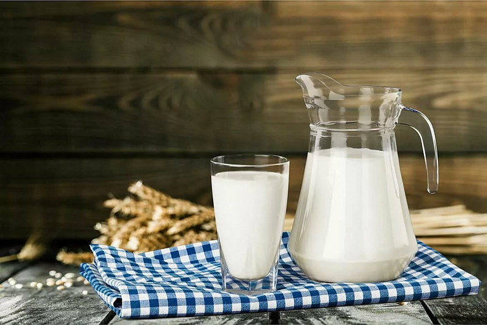

Молочные коктейли и десерты.


КОКТЕЙЛЬ «ЛЕД И ПЛАМЕНЬ»
Приготовьте кофе, остудите, процедите. Добавьте молоко и мороженое, взбейте всю смесь миксером.
Вам потребуется: 1 л молока, 0,5 л черного кофе, 7 ст. л. сливочного мороженого.
НАПИТОК «КЛУБНИЧНЫЙ»
Вскипятите молоко с сахаром. Клубнику тщательно вымойте, удалите плодоножки и протрите через сито. Осторожно, постоянно помешивая, влейте молоко, чтобы оно не свернулось. Все тщательно перемешайте и поставьте на холод.
Вам потребуется: 3 стакана молока, 800 г клубники, 4 ст. л. сахара.
НАПИТОК «ВЕЧЕРИНКА У ДРУГА»
Вскипятите молоко, охладите. Свежую малину промойте, очистите от плодоножек и разотрите с сахаром. Добавьте в малину молоко и взбейте миксером.
Вам потребуется: 3 стакана молока, 3 ст. малины, сахар по вкусу.
НАПИТОК «ДЖУНГЛИ»
Вскипятите молоко, охладите. Очистите банан, порежьте на кусочки и протрите через сито, смешайте с сахарной пудрой. Соедините все компоненты и взбейте миксером.
Вам потребуется: 3 стакана молока, 2 банана, 3 ст. л. сахарной пудры.
НАПИТОК «ОРИГИНАЛЬНЫЙ»
Вскипятите молоко, охладите. Спелую вишню промойте, удалите косточки и протрите через сито. Смешайте все компоненты и взбейте миксером.
Вам потребуется: 4 стакана молока, 700 г вишни, 4 ст. л. сахара.
НАПИТОК «СЛИВКИ»
Вскипятите молоко, охладите. Малину вымойте, очистите от плодоножек. Все компоненты смешайте и взбейте с помощью миксера. Добавьте в стаканчик при желании кубик льда.
Вам потребуется: 1,5 стакана молока, 2 стакана малины, 1/2 стакан сливок, 2 ст. л. сахара.
НАПИТОК «СМОРОДИНОВЫЙ»
Вскипятите молоко с медом, охладите. Промойте красную или черную смородину, очистите от плодоножек и протрите сквозь сито. Добавьте в смородину молоко, мешая, чтобы оно не свернулось и хорошо смешайте.
Вам потребуется: 4 стакана молока, 450 г смородины, 3 ст. л. меда.
НАПИТОК «ЮЖНЫЕ ДАРЫ»
Вскипятите молоко, охладите. Вымойте персики, удалите косточки. Плоды протрите сквозь сито. Смешайте все компоненты и взбейте с помощью миксера.
Вам потребуется: 2 стакана молока, 800 г персиков, 1 стакан сливок, 6 ст. л. сахарной пудры.
КОКТЕЙЛЬ «ПРИВЕТ ИЗ БРАЗИЛИИ»
Вскипятите молоко, охладите, добавьте сахар, желтки, кофе. Все смешайте с помощью миксера. Подавая, добавьте в стаканы по кубику льда.
Вам потребуется: 4 стакана молока, 4 ст. л. сахара, 4 яйца, 3 ст. л. растворимого кофе.
КОКТЕЙЛЬ «ОТЛИЧНЫЙ ПОПЛАВОК»
Разделите мороженое на две равные части. Одну положите в миксер, остальное пойдет на поплавок. Влейте вишневый сок, холодное молоко и взбивайте в течение 1–2 минут. Перед подачей к столу положите в фужер с коктейлем оставшийся кусочек мороженого. Он смотрится, как настоящий поплавок. К этому коктейлю подайте десертные ложечки и свежие ягоды клубники.
Вам потребуется: 2 ст. л. вишневого сока, 70 г молочного мороженого, 3/4 стакана холодного молока.
КОКТЕЙЛЬ «КОФЕЙНЫЙ»
Вскипятите молоко, охладите. Взбейте сливки с сахарной пудрой, добавляя кофе. Все компоненты смешайте с помощью миксера.
Вам потребуется: 3 стакана молока, 2/3 стакана черного кофе, 5 ст. л. сахарной пудры, 1 стакан сливок.
КОКТЕЙЛЬ «ВАНИЛЬНЫЙ»
Вскипятите молоко с ванилином. Какао смешайте с сахаром и небольшим количеством молока. Добавьте все в молоко и охладите. Все смешайте с помощью миксера.
Вам потребуется: 4 стакана молока, 10 г ванилина, 4 ст. л. сахара, 3 яйца, 4 ст. л. какао.
НАПИТОК «МОЛОЧНЫЙ»
Вскипятите молоко. Взбейте желтки с сахаром и добавьте, помешивая, горячее молоко. Охладите, добавьте ванильный сахар и смешайте с помощью миксера.
Вам потребуется: 4 стакана молока, 4 ст. л. сахара, 3 яйца, 40 г ванильного сахара.
КОКТЕЙЛЬ-ФЛИП «АССОРТИ»
Сыр натрите на мелкой терке, высыпьте в миксер, добавьте желток, сок половинки лимона, молоко и малиновый сироп. Взбивайте в течение трех минут. Вылейте в бокал, сверху посыпьте тертым миндалем и поставьте на 20 минут в прохладное место.
Украсить этот коктейль вам будет совершенно не сложно. Помните главное условие — напитки должны быть красивыми, оригинальными и напоминать яркое оперение петушиного хвоста.
Вам потребуется: 1/2 лимона, 100 г сыра, 1 желток, 1/2 стакана холодного молока, 30 г малинового сиропа, 5 г тертого миндаля.
КОКТЕЙЛЬ «ШОКОЛАДНЫЙ»
Кипяченое молоко подогрейте и растворите в нем сахар и шоколад, охладите. Добавьте ликер и смешайте с помощью миксера. Подавая, положите в стаканы по кубику льда.
Вам потребуется: 3 стакана молока, 70 г шоколада, 1,5 ст. л. сахара, 3 рюмки шоколадного ликера.
КОКТЕЙЛЬ «ИЗЫСКАННЫЙ»
В молоко добавьте лимонный сок, коньяк, ананасовый сок и яйца, растертые с сахаром. Все компоненты смешайте с помощью миксера.
Вам потребуется: 2 стакана молока, 2 яйца, 4 ст. л. сахара, 2 ст. л. лимонного сока, 1 стакан ананасового сока, 3 рюмки коньяка.
КИСЕЛЬ «МИНДАЛЬНЫЙ»
Обварите кипятком миндаль, очистите и измельчите. Налейте в стакан холодное молоко и смешайте его с крахмалом. Остальное молоко подогрейте и влейте в истолченный миндаль. Накройте крышкой и дайте постоять час. Процедите молоко сквозь салфетку, всыпьте сахар и вскипятите. Добавьте муку, крахмал, разведенный в молоке, и еще раз доведите до кипения.
Вам потребуется: 1,5 л молока, 30 г миндаля, 1/2 стакана сахара, 6 ст. л. кукурузного крахмала.
КОКТЕЙЛЬ «МЕДОВЫЙ»
Взбейте с помощью миксера желтки, добавьте мед, малиновый сок, кипяченое молоко. Все компоненты смешайте с помощью миксера. Подавая, добавьте в стаканы по кубику льда.
Вам потребуется: 2 стакана молока, 1 стакан малинового сока, 3 яйца, 1 ст. л. меда, 2 рюмки коньяка.
КОКТЕЙЛЬ «ОРЕХОВЫЙ»
Грецкие орехи слегка поджарьте и растолките. Молоко вскипятите с сахаром и какао. Добавьте орехи и варите на медленном огне 30 минут. Затем снимите с огня, остудите. Добавьте яичные желтки и все взбейте венчиком. Разлейте по фужерам. Подавайте с соломинками и рассыпчатыми печеньями.
Вам потребуется: 100–150 г очищенных орехов, 5 яичных желтков, 2 стакана молока, 5 ч. л. какао, 6 ст. л. сахара.
КОКТЕЙЛЬ «ФРУКТОВЫЙ»
Мороженое взбейте с ягодами миксером, вылейте в фужер и залейте клюквенным морсом.
Вам потребуется: 100 г сливочного мороженого, 1 ст. л. клубники, 1 ст. л. черники, 100 г клюквенного морса.
КОКТЕЙЛЬ «ЧЕРНИЧНО-СМОРОДИНОВЫЙ»
Все ингредиенты смешайте в миксере в течение 1–2 минут, разлейте по бокалам и сразу же подавайте к столу.
Вам потребуется: 100 г черничного сока, 100 г сока красной смородины, 150 г сливочного мороженого, 200 г молока.
КОКТЕЙЛЬ-ФЛИП «БОЛТУШКА»
Яйца разотрите с сахарным песком, добавьте холодное молоко и сок черной смородины, взбивайте в миксере 2 минуты, разлейте по бокалам и поставьте в прохладное место на 20–30 минут. На край каждого бокала наденьте кружочек лимона. Подавайте с кубиками льда и соломинками.
Вам потребуется: 1 л черносмородинового сока, 0,5 л холодного пастеризованного молока, 2 яйца, сахар по вкусу, 4–5 кубиков пищевого льда.
КОКТЕЙЛЬ «ЭКЗОТИКА»
Консервированные ананасы и мандарины положите в бокал, в миксере взбейте мороженое, вишневый сироп и варенье. Залейте этой смесью фрукты в бокале.
Вам потребуется: по 1/2 ст. л. консервированных ананасов, мандаринов, 150 г сливочного мороженого, 1 ст. л. вишневого сиропа, 1 ст. л. варенья из черной смородины.
БАНАНОВЫЙ НАПИТОК
Банан очистите, порежьте на кусочки. Взбивайте в миксере все компоненты в течение 1–2 минут.
Вам потребуется: 200 г молока, 1 банан, 2 ст. л. меда, 2 ст. л. сливочного мороженого.
НАПИТОК «УГОЩЕНИЕ»
Сироп, молоко и мороженое хорошо взбейте и разлейте по бокалам. На края бокалов насадите долечки киви.
Вам потребуется: 1 л свежего молока, 300 г мороженого, 10 ст. л. вишневого сиропа, киви 1 шт.
НАПИТОК «ДИЕТИЧЕСКИЙ»
Простоквашу охладите, взбейте с мелко нарезанной зеленью, добавьте соль по вкусу.
Вам потребуется: 1 л простокваши, соль, зелень укропа.
НАПИТОК «ТОМАТНЫЙ»
Простоквашу охладите, добавьте томатный сок, сметану и тщательно смешайте. Можно добавить зелень.
Вам потребуется: 1 л простокваши, 3 стакана томатного сока, 1 стакан сметаны, соль.
НАПИТОК «ОГУРЕЧНЫЙ»
Кислое молоко охладите. Натрите на крупной терке свежие огурцы, мелко нарежьте зелень, смешайте с простоквашей. Смесь взбейте с помощью миксера, посолите по вкусу.
Вам потребуется: 4 стакана простокваши, 300 г свежих огурцов, соль, зелень.
НАПИТОК «ОЗОРНИК»
Простоквашу охладите. Взбейте молоко, добавляя томатный и морковный сок. Посолите по вкусу.
Вам потребуется: 2/3 л простокваши, 1,5 стакана морковного сока, 1 стакана томатного сока, соль по вкусу.
НАПИТОК «СИМФОНИЯ»
Простоквашу охладите. Взбейте молоко, добавляя томатный сок и яблочное пюре, соль и сахар по вкусу.
Вам потребуется: 3 стакана простокваши, 2 ст. яблочного пюре, 1 стакан томатного сока, соль, сахар по вкусу.
КРЕМ «ФАНТАЗИЯ»
Очистите миндаль, измельчите и разведите молоком. Процедите, отожмите и всыпьте сахар. Отделите яичные желтки, смешайте с миндальным молоком, размешайте и процедите сквозь сито. Влейте смесь в формочки и поставьте в посуду с кипящей водой. Как только поставите, то сразу уменьшите огонь, чтобы вода не кипела. Когда молоко загустеет так, что его будет можно резать ножом, выньте формы и поставьте в холодное место. Выложите крем на блюдо и полейте сиропом, молочным или шоколадным соусом.
Вам потребуется: 3 стакана молока, 1/2 стакана сладкого миндаля, 1/2 стакана сахара, 10 г горького миндаля, сироп или молочный соус к сладким блюдам.
КРЕМ «ЯИЧНЫЙ»
Сварите крепкий кофе и смешайте его с кипяченым молоком, сахаром, яичными желтками. Тщательно размешайте и процедите сквозь сито. Влейте смесь в формочки и поставьте в посуду с кипящей водой. Как только поставите, то сразу уменьшите огонь, чтобы вода не кипела. Когда молоко загустеет так, что его можно резать ножом, выньте формы и поставьте в холодное место. Выложите крем на блюдо и украсьте нарезанными бананами, киви, клубникой.
Вам потребуется: 2,5 стакана молока, 3/4 ст. молотого кофе, 2/3 стакана сахара, 10 яиц.
КРЕМ «ЯИЧНО-ШОКОЛАДНЫЙ»
Натрите на терке шоколад, всыпьте его вместе с сахаром в молоко и вскипятите. Когда молоко остынет, добавьте желтки, размешайте и процедите сквозь сито. Влейте смесь в формочки и поставьте в посуду с кипящей водой. Как только поставите, то сразу уменьшите огонь, чтобы вода не кипела. Когда молоко загустеет так, что его будет можно резать ножом, выньте формы и поставьте в холодное место. Выложите крем на блюдо и полейте молочным соусом или подайте соус отдельно.
Вам потребуется: 2 стакана молока, плитка шоколада, 10 яиц, 1/2 стакана сахара.
КРЕМ «СЛИВОЧНЫЙ»
Растворите желатин в холодной воде и оставьте на 20 минут, после чего отожмите и растворите, хорошо помешивая, в 1/4 стакана кипятка. Влейте сливки в кастрюлю, поставьте в холодную воду и взбивайте до образования густой пены. Добавьте, все время помешивая, сахарную пудру, ванилин по вкусу и влейте растворенный желатин. Разлейте крем в формочки и охладите.
Вам потребуется: 1,5 стакана густых сливок, 2/3 стакана сахарной пудры, 12 г желатина, ванилин.
КРЕМ «УИК-ЭНД В ДЕРЕВНЕ»
Влейте сметану в кастрюлю, поставьте в холодную воду. Добавьте в сметану сахар, ванилин по вкусу и взбивайте, пока сметана не увеличится вдвое. Малину тщательно вымойте в холодной воде и протрите сквозь сито. Смешайте сметану с протертой ягодой и добавьте, все время помешивая, растворенный желатин. Разлейте крем в формочки, положите по клубничке и охладите.
Вам потребуется: 1 стакан сметаны, 10 г желатина, 1/2 стакана сахарной пудры, ванилин, 250 г малины.
ТВОРОЖНАЯ МАССА «РАДОСТЬ МЕДВЕЖАТ»
Протрите творог через сито. Желтки разотрите с сахаром и подогретым медом. Все компоненты смешайте, добавьте мягкое сливочное масло и взбейте. Подайте отдельно к столу взбитые сливки.
Вам потребуется: 250 г творога, 1 яйцо, 150 г натурального меда, 2 ст. л. сливочного масла, 2 ст. л. сахара.
ШОКОЛАДНЫЙ ТВОРОГ
В небольшую кастрюлю положите масло, сметану, какао, сахар, варите на медленном огне, непрерывно помешивая, до получения однородной массы. Творожную массу смешайте с молоком, орехами, полейте шоколадом и перемешайте. Сверху посыпьте тертым шоколадом. Выложите смесь в десертную вазочку, поставьте в холодильник. Этот десерт хорошо сочетается с ликерами.
Вам потребуется: 200 г творожной массы, 2 ст. л. сливочного масла, 2 ч. л. какао, 200 г сметаны, 2 ст. л. сахара, 1 ст. л. тертого шоколада, 1/4 ч. л. ванили, 1 ст. л. молока, 1 ст. л. молотых орехов.
ТВОРОЖНАЯ СМЕСЬ «ПРЕЛЕСТЬ»
Яблоко и персик очистите от косточек, мелко порежьте или натрите на терке. Смешайте их со всеми остальными компонентами, заправьте сметаной, уложите в вазочку, поставьте в холодильник, и через час этот простой фруктовый салат станет прекрасным дополнением к десертам вашего стола.
Вам потребуется: 200 г творога, 1 яблоко, 1 персик или абрикос, 1 ст. л. изюма, 1 ст. л. измельченных грецких орехов, 1 ст. л. сметаны.
ТВОРОГ «ОСТРЫЙ»
Нарежьте мелко помытый зеленый лук, смешайте с творогом, посолите по вкусу и залейте сметаной.
Вам потребуется: 250 г творога, 50 г зеленого лука, 3 ст. л. сметаны, соль по вкусу.
ДЕСЕРТ «СКРОМНЫЙ»
Почистите овощи, порежьте ломтиками и выложите один слой в кастрюлю так, чтобы было закрыто дно. На овощи выложите слой крупы. Слой крупы должен быть немного больше овощного. На крупу снова положите слой овощей, затем другую крупу. И так, пока кастрюля не заполнится. Внизу и вверху должен быть овощной слой. Влейте в кастрюлю горячую подсоленную воду, чтобы она покрывала содержимое, поставьте на сильный огонь и доведите до кипения. Когда вода закипит, выключите огонь, закройте крышкой и настаивайте в течение 30–40 минут. Затем все перемешайте и добавьте молоко.
Вам потребуется: любые овощи (свекла, морковка, кабачки, репа, тыква, капуста) и любая крупа (рис, пшено, перловка), 0,5 л молока.
«ПРИЯТНОЕ ПРОБУЖДЕНИЕ»
Размягченное сливочное масло нарежьте на небольшие кусочки, положите в кастрюлю и взбивайте до пышности деревянной лопаточкой. Добавьте сахар, ванилин по вкусу, щепотку соли, какао и все хорошо перемешайте. Протрите творог через сито. Добавляйте небольшими порциями творог и сметану, тщательно вымешивая. Выложите готовую массу на блюдо, украсьте толчеными орехами или свежими ягодами. Уберите в холодное место.
Вам потребуется: 0,5 кг творога, 3 ст. л. сметаны, 150 г сливочного масла, 1 стакан сахара, 1 ст. л. какао, ванильный сахар.
ЖЕЛЕ ИЗ ПРОСТОКВАШИ
Смешайте простоквашу с сахаром и ванилином, хорошо взбейте, добавьте растворенный желатин. Перемешайте, разлейте в формочки и уберите в холодное место. Для желе желательно использовать пастеризованную простоквашу.
Вам потребуется: 0,5 л простокваши, 15 г желатина, 4 ст. л. сахара, 5 г ванилина.
ДЕСЕРТ «ФРУКТОВОЕ РАЗНООБРАЗИЕ»
Очистите апельсины, бананы и нарежьте их, добавьте измельченные грецкие орехи, изюм, сок лимона с сахаром. Затем аккуратно смешайте десерт с шариками мороженого и сразу же подавайте к столу. В зависимости от ваших возможностей и фантазии вы можете менять составные части десерта, главное — в погоне за экзотикой не увлекайтесь слишком сильно и подбирайте компоненты, подходящие друг к другу.
Вам потребуется: 2 апельсина, 1 лимон, 2 банана, 2 ст. л. грецких орехов, 1 ст. л. изюма, 1 ч. л. сахара, 150 г мороженого.
СОУС ИЗ СГУЩЕННЫХ СЛИВОК
В кувшине нагревайте патоку, сахар и масло до тех пор, пока смесь не станет однородной (сахар и масло должны растаять). Затем добавьте в соус сгущенные сливки или молоко (без сахара), лимонный сок и все перемешайте. При остывании соус будет густеть, особенно если остывает в холодильнике. К бисквиту соус можно подать разбавленным (добавьте еще небольшое количество молока или сливок).
Вам потребуется: 175 г патоки, 65 г сахара, 50 г масла, 75 г сгущенных сливок, 50 мл лимонного сока.
ПУДИНГ С ИЗЮМОМ
Яичные желтки, молоко, мед смешайте, осторожно введите взбитые белки, затем добавьте рис, изюм, все перемешайте и перелейте в неглубокую форму. Выпекайте при небольшой температуре 30 минут. Готовность пудинга проверяйте деревянной палочкой, к ней не должны прилипать крошки. Испеченный пудинг нарежьте кусочками и переложите на сервировочные тарелки.
Вам потребуется: 3 яйца, 1 стакан молока, 3 ст. л. меда, 3 ст. л. молочной рисовой каши, 1 ч. л. изюма, 1 ст. л. растительного масла.
ДЕСЕРТ «ПОТРЯСАЮЩИЙ»
Очистите мандарин и персик от кожицы и семян. Соки смешайте, добавьте ванилин, корицу, дольки мандарина, персика и проварите 5 минут. Смесь охладите, залейте ею мороженое, сверху полейте йогуртом. Десерт «Потрясающий» понравится как вам, так и вашим гостям, мы ни капли не сомневаемся в этом.
Вам потребуется: 400 г мороженого, 1 ст. л. лимонного сока, 1 ст. л. апельсинового сока, 1 мандарин, 1 персик, 1 ст. л. йогурта, 1/2 ч. л. ванилина, 1/4 ч. л. корицы.
ДЕСЕРТ «РИСОВЫЙ»
Бананы очистите, нарежьте колечками и слегка обжарьте на сливочном масле, затем добавьте рис, воду. Через 5 минут влейте молоко и варите на медленном огне 10 минут. В готовое блюдо можно добавить немного корицы и сахара, и вы почувствуете себя очутившимися на каком-нибудь побережье.
Вам потребуется: 400 г риса, 3 банана, 3 ст. л. сливочного масла, 600 г воды, 250 г молока, корица, сахар.
ТОРТ С ЗЕФИРОМ
Зефир порежьте кружочками, сливки взбейте с сахаром. Уложите кружки зефира одним слоем на блюдо, полейте их сливками, клюквенным вареньем с измельченными орехами, сверху украсьте дольками мандаринов. Повторите слои в том же порядке. Поставьте торт в холодильник на 8 часов.
Вам потребуется: 1 кг зефира, 1 ст. клюквенного варенья, 1 кг мандаринов, 500 г сливок, 200 г грецких орехов, 200 г сахара.
КОФЕ «ВЗРЫВ ЭМОЦИЙ»
Воду вскипятите и ополосните кипятком кофейные чашки. Всыпьте в чашки необходимое количество кофе и залейте кипятком. В каждую из чашек опустите кусочек мороженого. Количество мороженого в чашке зависит от того, насколько вы любите это лакомство. Если вы считаете, что сахар необходим, то добавьте его по вкусу.
Чашечку кофе во время ланча можно превратить в настоящее лакомство для сладкоежек. А почему бы и нет? Конечно, кофе «Взрыв эмоций» не для каждого дня. Но позволяйте себе эту маленькую роскошь как можно чаще.
Вам потребуется: 2–3 ч. л. растворимого кофе, 1/2 л воды, 50 г мороженого пломбир, сахар по вкусу.
Мы предлагаем любителям молочного мороженого не тратить деньги и не покупать его в магазинах, а приготовить его самим. Такой способ имеет массу преимуществ — вы проведете с пользой время, а заодно приготовите вкусное лакомство. Ну что, приступим к делу?
МОРОЖЕНОЕ МОЛОЧНОЕ
Прокипятите молоко с сахаром. Взбейте 4 желтка и 4 яйца (можно взбить одни желтки) и постепенно подливайте их в теплое молоко, непрерывно помешивая. Поставьте на огонь и размешивайте, пока смесь не загустеет, но не доводите до кипения. Снимите с огня, мешайте еще 3–4 минуты, пока смесь немного не остынет, добавьте ванилин. Процедите через сито и уберите в холодное место, чтобы смесь остыла. Полученный крем заморозьте в специальной машине-мороженице. Теперь вы знаете, как приготовить молочное мороженое. Добавляя в него ароматические вещества, любимые орехи и фрукты, вы получите новый вид мороженого. Можете подавать его в разных формах и именовать, как пожелает ваша душа, все зависит от вашей фантазии.
Вам потребуется: 1 л молока, 1,5 ст. сахара, 10 яиц, 2 пакетика ванильного порошка.
В наше время рядом с кофе и чаем, ставшими уже традиционными, занимают прочные позиции новые напитки. К разряду вкусных и полезных относится йогурт. Неспроста его очень любят дети и молодежь. А взрослые, наверное, просто еще не распробовали замечательный вкус этого напитка. Для них и для тех, кто хочет узнать какой-нибудь новый рецепт йогурта предназначены наши советы.
ЙОГУРТ «ОТЛИЧНЫЙ»
Йогурт можно купить, они продаются самые разнообразные. Но если вам не хочется тратить на это деньги или вы отдаете предпочтение всему натуральному, то сделать йогурт по силам и в домашних условиях. Йогурт имеет особый вкус и хранится не более суток. На кисло-молочной основе с использованием фруктов, овощей и соков вы можете приготовить именно то, что устроит ваш вкус.
Ряженку охладите в холодильнике и вылейте в глубокую неметаллическую посуду. Засыпьте в ряженку сахарную пудру и взбейте. Не переставая взбивать, тонкой струйкой влейте в ряженку яблочный сок. Тщательно взбейте полученную смесь до однородной массы.
Ягоды малины переберите, промойте холодной водой и дайте стечь воде с ягод. После этого ягоды аккуратно добавьте в йогурт и размешайте смесь ложкой. Йогурт немного охладите, и он готов к употреблению.
Вам потребуется: 500 г ряженки, 50 г ягод малины, 5 ст. л. яблочного сока, 4 ч. л. сахарной пудры.
ЙОГУРТ «МЕДОВО-АНАНАСОВЫЙ»
Охлажденную ряженку взбейте с абрикосовым соком. Мед слегка растопите до жидкого состояния и постепенно вливайте в ряженку. Теперь тщательно взбейте йогурт. После того как вы получите однородную массу, добавьте мякоть ананаса и перемешайте йогурт. Ананас можно использовать не только свежий, но и консервированный.
В выборе фруктов и соков для йогурта вы можете проявить фантазию и вкус. Конечно, во многом это зависит от ваших возможностей. В летнее время года фрукты вполне доступны, и поэтому пусть йогурт станет привычным напитком для ланча. А если к зиме он перейдет в привычку, то для йогурта можно использовать свежезамороженные или консервированные фрукты.
Вам потребуется: 500 г ряженки, 20 г меда, 50 г мякоти ананаса, 4 ст. л. абрикосового сока.
…Ну и, наконец, последний раздел из нашей кулинарной главы. «Last, but not least», — говорят англичане, что означает «последний, но не худший». Итак, облизывайте ваши пальчики, ведь мы переходим к изделиям из теста!